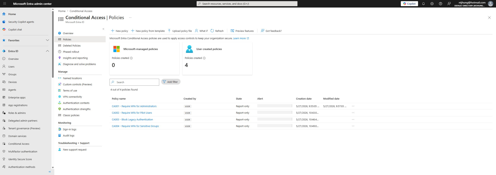
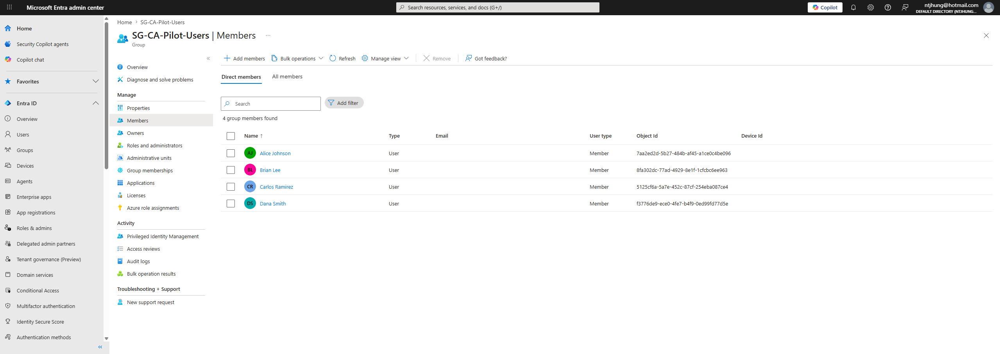
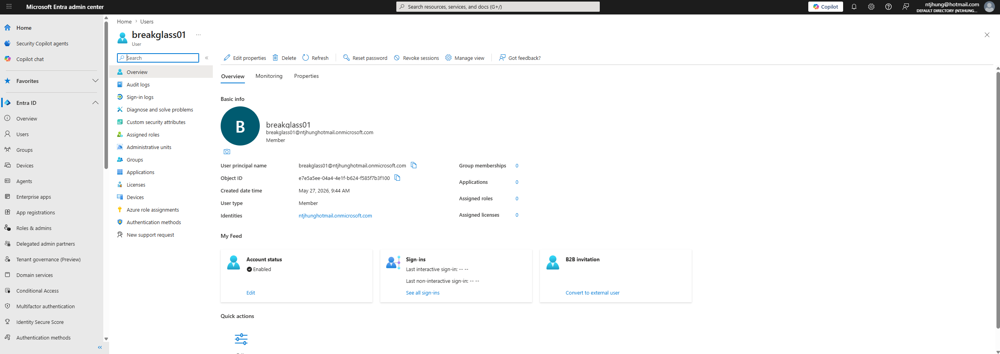
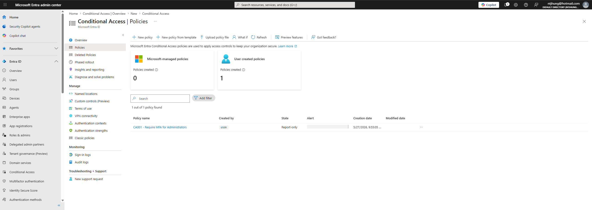
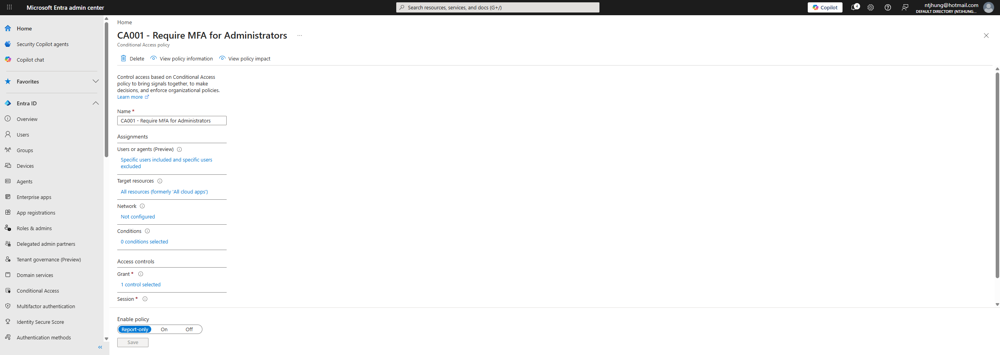
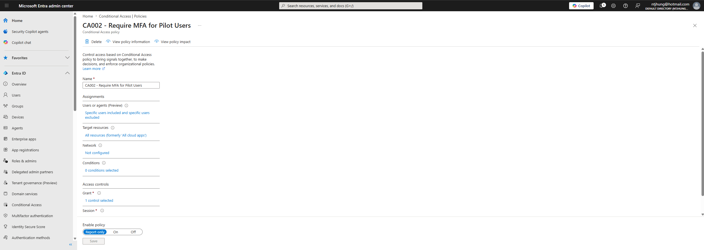
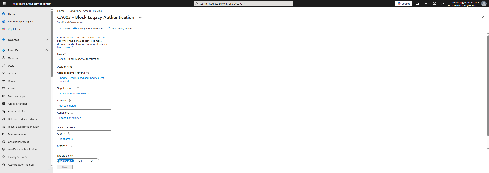
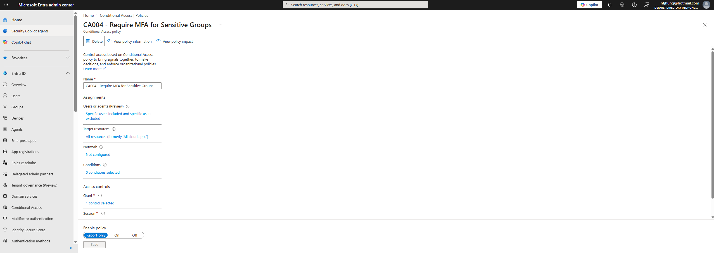

# Conditional Access Security Baseline
## Project Summary
This project demonstrates a Microsoft Entra ID Conditional Access security baseline. The lab focuses on creating and documenting Conditional Access policies in report-only mode to improve identity security while reducing the risk of accidentally blocking users or administrators.
This project originally started as a Conditional Access design and rollout plan because the lab tenant did not have the required licensing. After Microsoft Entra ID P2 trial access was activated, the project was upgraded to include live Conditional Access policy configuration screenshots.
## Business Problem
Organizations need to protect user identities without causing unnecessary business disruption. Conditional Access policies help enforce security controls such as MFA, administrator protection, legacy authentication blocking, and sensitive group protection. These policies should be planned, tested, documented, and rolled out carefully.
## What I Built
- Created a Conditional Access pilot group
- Added selected test users to the pilot group
- Documented a break-glass account for emergency access planning
- Created live Conditional Access policies in report-only mode
- Created an administrator MFA policy
- Created a pilot user MFA policy
- Created a legacy authentication blocking policy
- Created a sensitive groups MFA policy
- Created rollback documentation
- Created a Conditional Access policy matrix
- Collected screenshots as audit evidence
## Policies Created
### CA001 - Require MFA for Administrators
This policy targets privileged administrator roles and requires MFA. It was configured in report-only mode to safely test impact before enforcement.
### CA002 - Require MFA for Pilot Users
This policy targets a Conditional Access pilot group and requires MFA for selected users. The pilot group allows controlled testing before applying policies more broadly.
### CA003 - Block Legacy Authentication
This policy is designed to block older authentication methods that do not support modern security controls. It was created in report-only mode to review potential impact before enforcement.
### CA004 - Require MFA for Sensitive Groups
This policy targets sensitive groups such as HR, Finance, IT Admins, and Contractors. These groups may have elevated risk because they involve sensitive business data, privileged access, or temporary contractor access.
## Lab Groups and Accounts
### Conditional Access Pilot Group
- SG-CA-Pilot-Users
Example pilot users:
- Alice Johnson
- Brian Lee
- Carlos Ramirez
- Dana Smith
### Sensitive Groups
- SG-HR-Employees
- SG-Finance-Employees
- SG-IT-Admins
- SG-Contractors
### Break-Glass Account
A break-glass account was documented for emergency access planning. Break-glass accounts should not be used for daily administration and should be excluded from selected Conditional Access policies to reduce the risk of full tenant lockout.
## Screenshots
### Conditional Access Policy List

### Conditional Access Pilot Group Members

### Break-Glass Account

### CA001 - Require MFA for Administrators

### CA001 - Report-Only Mode

### CA002 - Require MFA for Pilot Users

### CA003 - Block Legacy Authentication

### CA004 - Require MFA for Sensitive Groups

## Documentation Summary
### Conditional Access Planning
The project includes a Conditional Access policy matrix that defines target users, target resources, access controls, and deployment mode.
### Report-Only Rollout
The policies were created in report-only mode first. This allows the policy impact to be reviewed before enforcement, reducing the risk of accidentally blocking users or administrators.
### Break-Glass Planning
A break-glass account was documented to support emergency access if Conditional Access policies cause unexpected administrative access issues.
### Rollback Planning
The rollback plan documents how to disable or move a policy back to report-only mode if users or administrators are unexpectedly blocked.
### Sensitive Group Protection
Sensitive groups such as Finance, HR, IT Admins, and Contractors were targeted for stronger MFA controls because they may involve confidential data, privileged access, or temporary access.
## Testing Approach
The testing approach includes:
1. Create a Conditional Access pilot group.
2. Add selected test users.
3. Create policies in report-only mode.
4. Exclude break-glass accounts where appropriate.
5. Review policy configuration.
6. Capture screenshots as evidence.
7. Document rollback steps.
8. Move toward enforcement only after testing is complete.
## Skills Demonstrated
- Microsoft Entra ID
- Conditional Access
- MFA policy planning
- Report-only policy deployment
- Break-glass account planning
- Legacy authentication blocking strategy
- Sensitive group protection
- Rollback planning
- IAM policy documentation
- Audit evidence collection
## Resume Bullet
Designed and configured Microsoft Entra Conditional Access policies in report-only mode, including administrator MFA, pilot user MFA, legacy authentication blocking, sensitive group protection, break-glass account exclusions, testing strategy, rollback planning, and audit evidence documentation.
[Back to Home](../index.md)